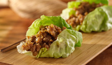

Mom's MSG-free Lettuce Wrap

Description
This is an MSG-free chinese lettuce wrap recipe adapted by Coco for Mom. I switched Soy sauce for Coconut Aminos and Hoisin sauce for Pickapeppa Sauce.
Full Ingredients
- 1lb Ground Chicken
- 1 Yellow Onion
- 1 red or green bell pepper
- 1 8oz can of water chestnuts
- 4 tablespoons of Coconut Aminos
- 2 tablespoons of Pickapeppa
- 2 tablespoons of rice vinegar
- 1 tablespoon of sesame oil
- 1 tablespoon of cornstarch
- 3 cloves of minced garlic/3 tablespoons of minced garlic
- An inch of peeled and minced ginger/1/2 teaspoon of dried ginger
- 2 small heads of bib lettuce
Mis en Place
The Lettuce
- Remove lettuce from the head and rinse.
- Set aside for serving
The Sauce
- Gather the ingredients.
- 4 tablespoons of Coconut Aminos
- 2 tablespoons of Pickapeppa
- 2 tablespoons of rice vinegar
- 1 tablespoon of sesame oil
- 1 tablespoon of cornstarch
- 3 cloves of minced garlic/3 tablespoons of minced garlic
- An inch of peeled and minced ginger/1/2 teaspoon of dried ginger
- Combine the ingredients and let sit.
The Cornstarch Slurry
- In a small bowl, combine 1 tablespoon of cornstarch to 2 tablespoons of water.
- Let sit with a utensil to stir again as needed before pouring the slurry into the saucepan at the end of the recipe.
Chopping
- Mince the garlic (if necesssary)
- Peel and mince or grate the ginger (if necessary)
- Dice the onion
- Dice the bell pepper
- Dice the water chestnuts
- Thinly slice the green onion greens
Stir frying
The Chicken
- Heat 1 tsp of oil in a large skillet over medium heat until shimmering.
- Spread 1lb of ground chicken in the pan to brown. Leave it alone, do not stir for about 5 minutes until the meat browns on the bottom. Flip the meat to brown the other side and repeat.
- When the chicken is browned, remove it from the pan and set it aside in a big bowl.
The Vegg
- Heat 1 tsp of oil in a large skillet over medium heat until shimmering.
- Sautee the onions and peppers until the onions are translucent.
- Add water chestnuts and cook until the have a nice browning.
- When the vegg is cooked, add the chicken back to the pan.
The Sauce and Slurry
- When the chicken is warm again, toss in the sauce.
- Give the sauce a few minutes to penetrate the meat and veg.
- Stir the slurry to reincorperate the starch, then slowly pour the slurry over the saucepan.
- Stir the pan to evenly distribute the slurry to give the sauce a glossy, thick texture.
- Turn off the heat.
Plate and Serve
- Place the chicken and veg on a platter for sharing.
- Top with green onion.
- Serve with prepared lettuce.
Enjoy!
Storing Leftovers
- Wait until it cools and store in fridge
Home